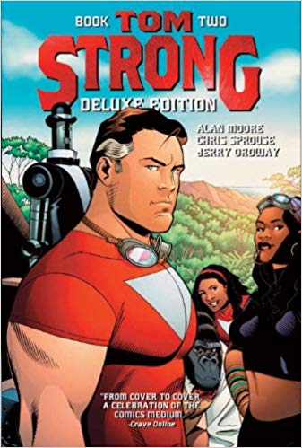
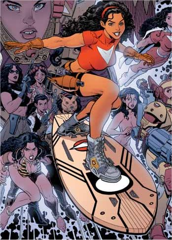
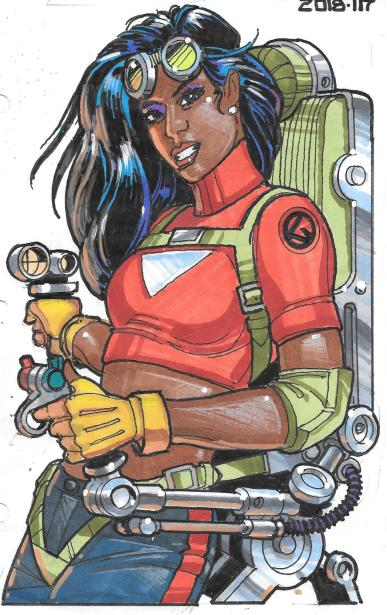
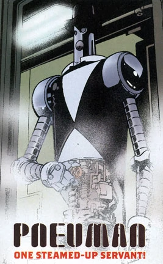

TOM STRONG

Tom Strong es uno de los mejores personajes creados en los últimos años por Alan Moore. Tom Strong es una mezcla de Doc Savage, Tarzán y Superman. La acción se desarrolla en Millennium City a finales del siglo XX, pero el mundo de Tom Strong no es el nuestro, sino el que hubieran podido imaginar H.G. Wells o Julio Verne hace cien años. Pero Alan Moore juega con la ventaja de saber cómo es realmente el mundo actual y por tanto puede introducir todo aquello que nuestros antepasados no podían ni imaginar (por supuesto los coches y los ordenadores, pero sobre todo los aspectos sociales como la liberación de la mujer, la igualdad entre razas, etc.) para que el resultado esté muy próximo a la perfección. La parte gráfica está a cargo principalmente de Chris Spouse, aunque en casi todos los números trabajan varios dibujantes. Pero el trabajo de cada dibujante está inteligentemente repartido y el guión de Alan Moore se adapta al estilo del dibujante.
Tom Strong
Tom Strong es el protagonista principal. Nació en 1908 en Attabar Teru, la isla protegida por el arco iris, y fue criado en una cámara de gravedad 5 para potenciar su resistencia física y alimentadoexclusivamente con Goloka para aumentar su longevidad e inteligencia. Un terremoto le dejóhuérfano y libre simultáneamente a los ocho años. A los veinte abandonó Attabar Teru para convertirse en el protector de Millennium City, aunque sus aventuras le han llevado más allá del espacio y del tiempo.

Dhalua Strong
Dhalua es la hija pequeña del jefe Omotu de Attabar Teru. Es la mujer de Tom Strong y su
compañera de aventuras. Cuando Tom no está en Millenium City, ella le sustituye en su trabajo. Más vale no ser objeto de su cólera, pues tiene muy mal genio.

Dhalua Strong
Dhalua es la hija pequeña del jefe Omotu de Attabar Teru. Es la mujer de Tom Strong y su
compañera de aventuras. Cuando Tom no está en Millenium City, ella le sustituye en su trabajo. Más vale no ser objeto de su cólera, pues tiene muy mal genio.
Rey Salomón
El Rey Salomón es el producto de los experimentos cerebrales en un mono. Junto con Pneuman, Rey Salomón cumple el papel de ayudante gracioso, pero eficaz. Cuando su trabajo de mantenimiento de la base de operaciones de Tom Strong de deja tiempo libre, su pasatiempo favorito es jugar al golf. Le agobian sobremanera las innumerables cartas que llegan dirigidas a los Strongmen de América.

Dhalua Strong
Dhalua es la hija pequeña del jefe Omotu de Attabar Teru. Es la mujer de Tom Strong y su
compañera de aventuras. Cuando Tom no está en Millenium City, ella le sustituye en su trabajo. Más vale no ser objeto de su cólera, pues tiene muy mal genio.